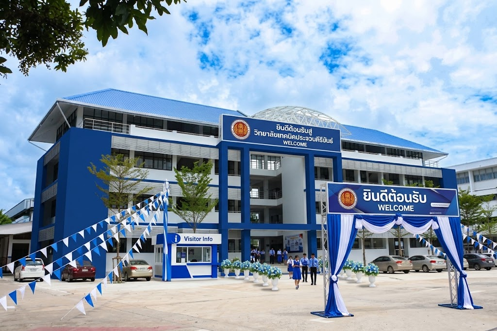

วิทยาลัยเทคนิคประจวบคีรีขันธ์Prachuap Khirikhan Technical College |
|||||||||||||||||||||||||||||||
| หน้าแรก | ประวัติวิทยาลัย | แผนกวิชา | ติดต่อเรา | ||||||||||||||||||||||||||||
ยินดีต้อนรับ วิทยาลัยเทคนิคประจวบคีรีขันธ์สถานศึกษาที่มุ่งเน้นการพัฒนาความรู้ ความสามารถ และทักษะด้านวิชาชีพ เพื่อเตรียมความพร้อมเข้าสู่โลกการทำงาน |
|||||||||||||||||||||||||||||||
ประวัติวิทยาลัย
วิทยาลัยเทคนิคประจวบคีรีขันธ์ เริ่มก่อตั้งขึ้นเมื่อ พ.ศ. 2481 ในชื่อโรงเรียนช่างไม้ประจวบคีรีขันธ์ โดยเปิดสอนด้านช่างไม้เป็นแผนกแรก |
|||||||||||||||||||||||||||||||
แผนกวิชาที่เปิดสอน
|
|||||||||||||||||||||||||||||||
ติดต่อเราที่อยู่: 302 ถนนสละชีพ ตำบลประจวบคีรีขันธ์ อำเภอเมืองประจวบคีรีขันธ์ จังหวัดประจวบคีรีขันธ์ 77000 โทรศัพท์: 032-611130 เว็บไซต์: www.pktc.ac.th |
|||||||||||||||||||||||||||||||
|
เว็บไซต์แนะนำวิทยาลัยเทคนิคประจวบคีรีขันธ์
จัดทำเพื่อการศึกษา จัดทำโดย น.ส.ณัฐฉรียา เกิดลาภ |
|||||||||||||||||||||||||||||||